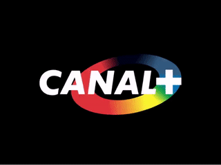
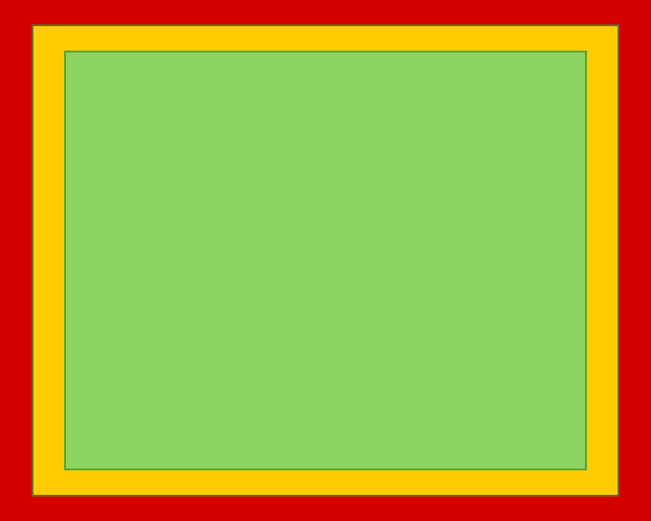
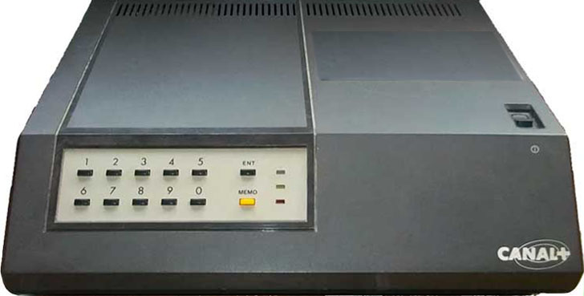

I spent my childhood in France, playing a lot of soccer and watching way too much TV. In the 80s, there were three channels available. Two of them, Antenne 2 and FR3, were state funded and boring while TF1 was privatized and offered plenty of Japanese cartoons. My generation grew up with Captain Tsubasa, Saint Seiya, Captain Harlock, and Grendizer.
There was no cable and no Internet, the TV signal was broadcast over the air and every house had an antenna on its roof to capture waves full of Kame-hame-has.
Things changed in 1984 with the launch of a fourth channel. Canal Plus (Channel Plus) was to revolutionize the TV landscape with recent movies, international sports coverage, and no commercials. To fuel its ambitions, "Canal" was to be funded with monthly fees paid by subscribers.
The technical difficulty was dead simple. How do you make sure only those who paid can watch when the signal is broadcast to everybody? Easy, you encrypt it with something called "Discret 11".
 The French TV system did not use NTSC but SECAM which is a lot like PAL. The video part is made of a stream of frames transmitted at 25Hz. Each frame is made of 625 blocks (hence one block is allocated 64µs). The audio stream is interleaved at the end of the blocks.
Each blocks contain data for the TV electron gun to draw one scanline. It proceeds from top left to the bottom right of the screen. Because the gun needs to reposition itself vertically (VSYNC) and the signal needs meta-data, out of the 625 blocks only 576 result in visible lines.
The vertical resolution is fully discrete but the horizontal resolution is analogue[1]. Due to horizontal reset (HSYNC), out of the 64µs in a line only 52µs are available resulting in a resolution of 704 points.
Something that will come handy later is to remember that not all TVs were of the highest quality. Some chipped at the image and did not display the whole 704x576. There is this concept of invisible area (▮) which is never displayed, Action-safe area (▮) which may be displayed, and Title-safe area (▮) which is guaranteed to be displayed by all TVs.
Discret 11 doesn't encrypt at the frame level but at the line level. Actually it does not even encrypt, it only delays a line by shifting it to the right and padding the left part with black. This is done by exploiting the analogue nature of the signal by delaying the line data and replacing it with blank. The beauty of this processes is that it can be achieved with cheap analog hardware without need for an expensive numeric system.
To decide how much to decal a line, Discret 11 uses a secret 11-bit key
(hence the name). The key is used as a seed in a Linear Feedback Shift Register (the same technique used in Wolfenstein 3D during Fizzlefade[2]) to generate a pseudo-random series of numbers.
For each of the 576 lines, a number is obtained from the LFSR. Modulo 3 brings the value from range 0-2047 to 0-2. This tells by how much to delay (pad) a line to the right (0, 13, or 26 "pixels").
That's it. It is simple but highly efficient as you can see by this example.
If lines are delayed to the right and left-padded with black then some data is lost. How can the image be perfectly reconstructed during decryption? That is where the areas mentioned earlier are exploited. The TV signal did not use the full 576x704, it was padded with black borders to remain in the Title area. Hence what was inserted on the left was exactly what was lost on the right.
Cryptimage[3] developer, Mannix, kindly provided more insight on the internals of Discret 11.
The choice of the delay (0, 902 ns and 1804 ns) depends of the LFSR value assigned to the line and the current frame inside of a sequence of 6 frames (every 6 frames the LFSR is reset to its initial seed value).
The decoder also monitors the luminance value of 2 TV lines : 310 and 622, these lines can blink to "full black" or "full white", and it will allow the decoder to synchronize the decryption process, to select the correct level of audience (carried by TV line 622) and to initialize the seed of LFSR, the decoder uses also a 16 bits code stored in its EEPROM chip, in order to compute the correct seed value.
A 8-bit microcontroler of the Intel MCS48 family is used (Intel 8048) inside the decoder, it contains the main program.
-- Mannix
Wait, line 310 would flip to all white/black for synchronization? But that is in the middle of the screen isn't it? No it isn't. Each frame is actually made of two fields containing all even and then all odd lines. The electron gun refreshes first the even scanlines and then the odd scanlines. This is how a refresh rate of 50Hz is achieved with a 25Hz signal. Line 310 is actually at the bottom of the screen and not visible.
Probably because it was much less of an issue if it was cracked, the audio signal received significantly less polish than the video. It is an occurrence of security via obscurity.
A normal SECAM signal uses FM on a 6Mhz carrier.
Discret 11 modulates the signal via AM using a carrier signal of 12.8 kHz (with a low-filter to avoid aliasing[4]). The idea is to separate the sound into two bands around 12.8 KHz and to transpose the high band down and the low band up.
This is a fully reversible "hard-wired" process that requires no key, only some insight.
With an encrypted SECAM signal flowing out of their towers, Canal+ engineers had to figure out an easy way to consume it on the subscribers' end.
The solution was to ship to people a device called a "decodeur". Receiving as input the encrypted signal from the antenna it had a SCART[5] output to be plugged into the TV set. To watch Canal+, customers did not set their TV to channel four but to SCART input.
Now comes the problem of preventing people from cheating the system. The elephant in the room is the system of "secret key". It would have eventually leaked so it was rotated every month. Users had to enter the new key via a pad on the top of the "decodeur". Keys rotation was decided four months in advance and sent by mail.
With an 11-bit key it would have made sense to let people enter a four-digit number. But that would have introduced two weaknesses in the scheme by allowing brute-force attacks and also let customer cancel their membership to use their friend's key.
Instead, the decision was made to provide codes that were not four-digits but eight-digits long. That number was to be fed to a chip and hashed along with the decoder serial number, hence avoiding both brute-force and key sharing attacks. And there were more advantages as outlined by Mannix.
The eight digits entered by the user actually results in not one but six keys. That is because the system had a (never used) audience feature made of levels. That was to allow subdividing memberships into Cinema, Sports, Documentaries and so on.
The eight digits and the serial number in the EEPROM become a 16-bit key which in turns is used to generate six 11-bit keys for each levels. To identify what level a show belonged to, it was encoded in the blink of line 622.
There is also a 7th audience level, used at the end of the month (for 2 of 3 days, for the transition to the next month), it is a kind of "free mode" where all decoders can decrypt even if the user did not pay the subscription, the 7th level audience uses always this 11 bit key : 1337.
-- Mannix
Despite its simplicity and efficacy, Discret 11 did not operate for long. "Canal" went live on November 4th, 1984. Two hours later, as the latest Belmondo movie was playing, it was discovered that 2% of TVs were incompatible with the system[6]. That was 180,000 very unhappy users.
In December 1984, Radio Plans magazine almost printed the Discret 11 schematics but was legally barred from it by a court decision. The drawings still managed to leak and became widely photocopied. Eventually, under the dubious motive of allowing Belgium, Luxembourg, and Monaco citizens to access the content, "Le quotidien de Paris" magazine published the plans anyway[7].
Piracy became rampant. Asking for "TBA 970" delay chips in electronic stores prompted employees to offer the full list required to build a "decodeur pirate". The encryption system was updated to Nagravision encryption in 1992 and Discret 11 was retired by 1995.
These issues did not prevent the fourth channel from becoming immensely successful. It eventually launched CanalSatellite in 1996 and became a major satellite broadcaster in Europe[8].